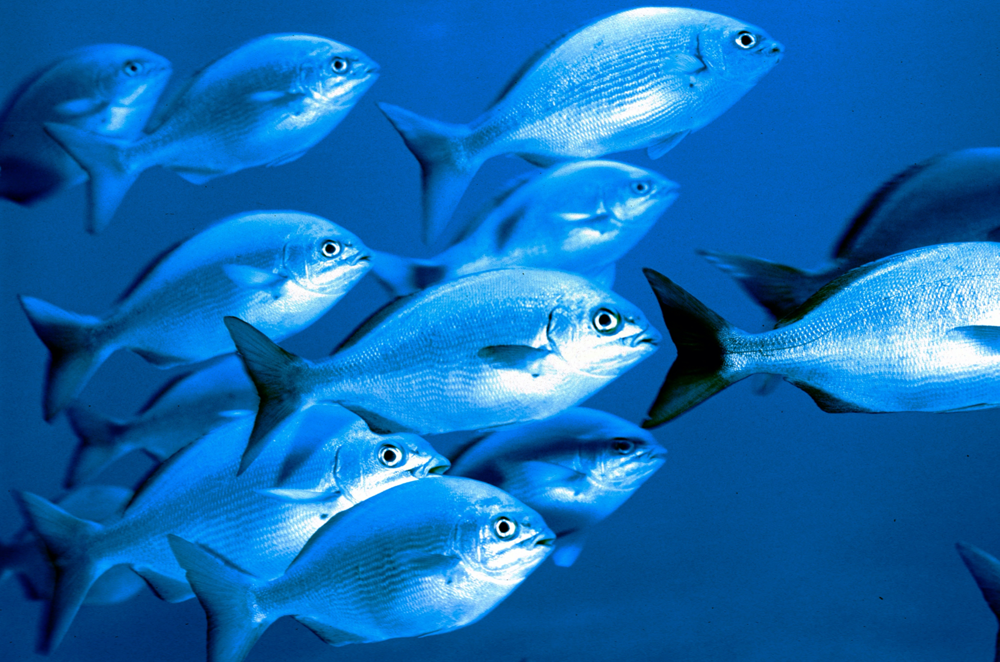
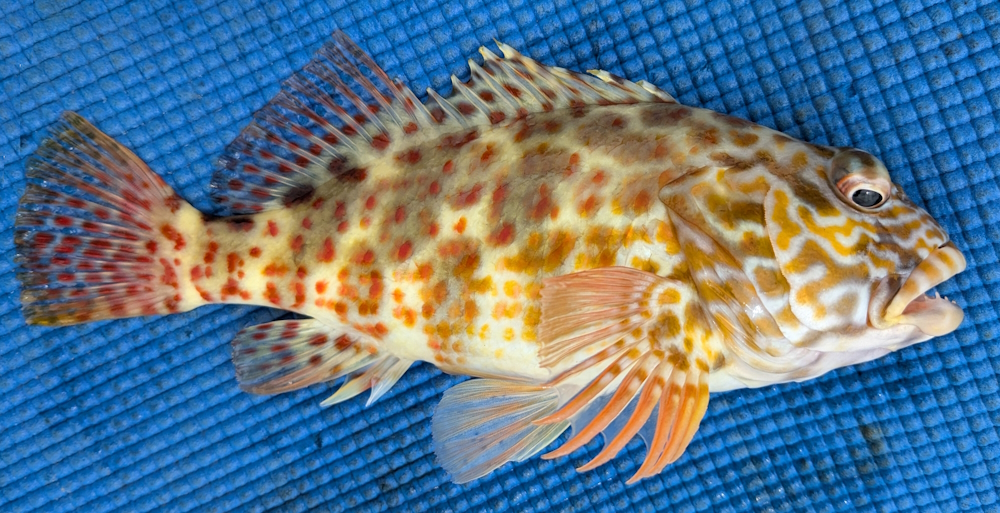
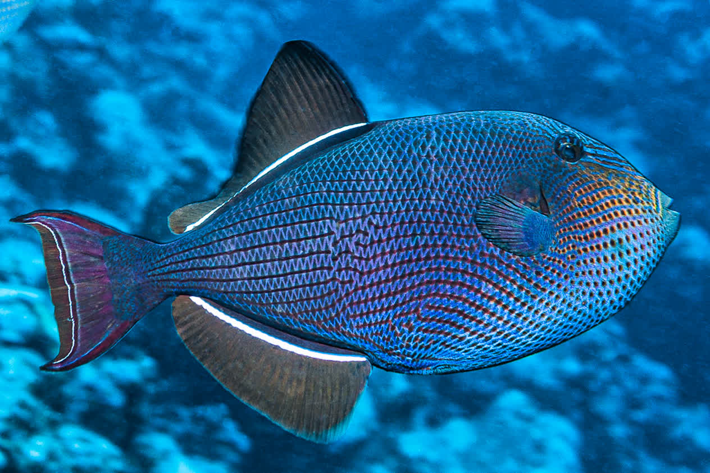
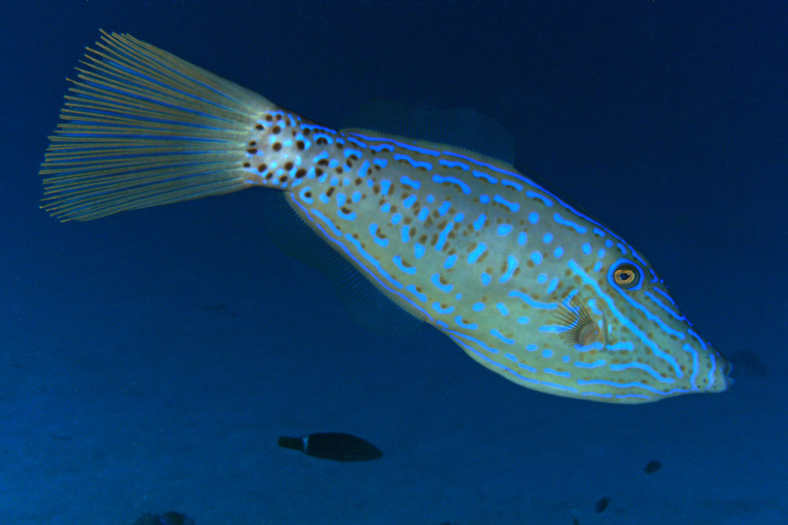

Nenue
Nenue, or Hawaiian chub, is a common seaweed-eating reef fish popular for poke, often found schooling in shallow Hawaiian waters. Not only do they like seaweed but they also go after white bread.

Stocky Hawkfish
The Stocky Hawkfish is a robust, predatory fish found on shallow Indo-Pacific reef fronts, known for waiting on rocks to ambush prey with quick, precise movements. If you cast too close to the rocks, then you're bound to have one of these guys swallow your hook.

Triggerfish
Triggerfish are colorful, oval-shaped reef fish known for a unique, locking dorsal spine used for defense and anchoring in crevices. These often territorial fish possess powerful jaws designed to crush hard-shelled prey like sea urchins and crustaceans.

Broomfish
The broomfish, or scrawled filefish, is a long-bodied, tropical reef fish recognized by its distinct, broom-like tail, iridescent blue, scribbled markings, and rough sandpaper-like skin. With their small mouths and big teeth, they nibble off your bait without giving you a chance to set your hook.